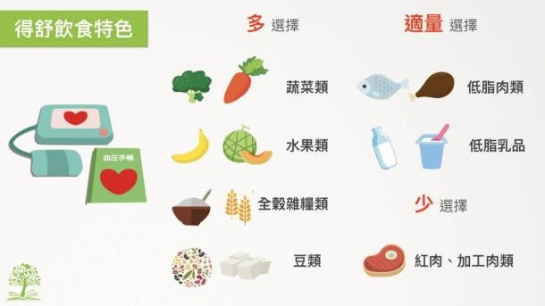
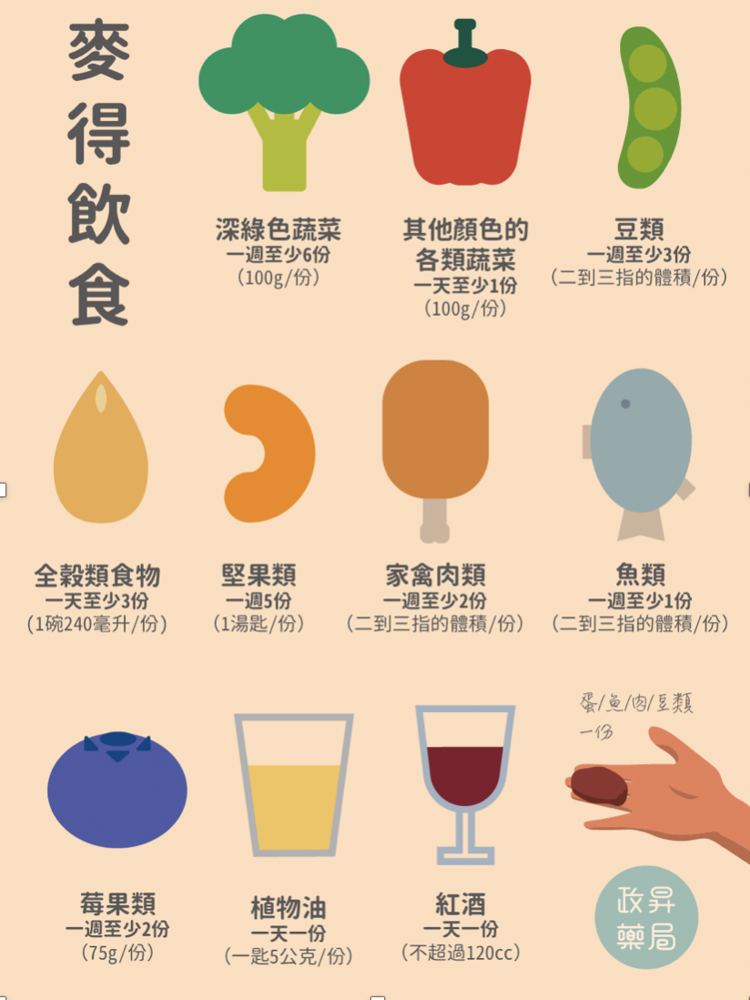
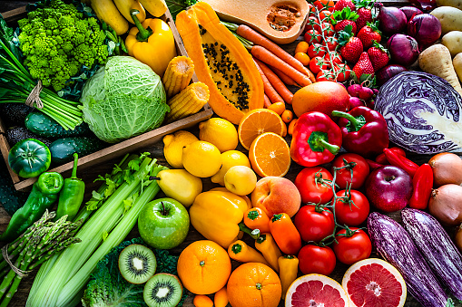
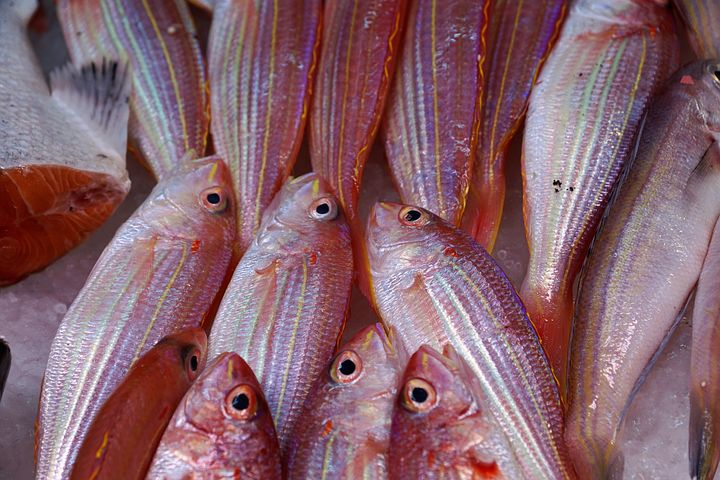

<!DOCTYPE html>
<html>
<head>
	<link rel=stylesheet type="text/css" href="飲食.css">
	</head>
</html>
<style>
@import url('https://fonts.googleapis.com/css2?family=Noto+Sans+TC:wght@500&display=swap');
</style>
<title>Demantia_飲食</title>
<body>
    <header>
<nav>
    <ul class="flex-nav">
        <li><a href="file:///D:/Downloads/%E7%B6%B2%E9%A0%81/dementia/dementia%20aboutus.html">關於我們</a></li>
        <li><a href="file:///D:/Downloads/%E7%B6%B2%E9%A0%81/dementia/%E6%B8%AC%E9%A9%97.html">線上測驗</a></li>
        <li><a href="file:///D:/Downloads/%E7%B6%B2%E9%A0%81/dementia/%E9%81%8B%E5%8B%95.html">預防方法</a></li>
        <li><a href="file:///D:/Downloads/%E7%B6%B2%E9%A0%81/dementia/hospital.html">就醫資訊</a></li>
    </ul>
</nav>
</header>
    
    <!--標題-->
	<div class="title">
        <span>預防方法</span>
        
    </div>


    <!--小分類-->
    <div >
        <a class="category" href="file:///D:/Downloads/%E7%B6%B2%E9%A0%81/dementia/%E9%81%8B%E5%8B%95.html">
            <h2>運動</h2>
        
        </a>

        <div class="category">
            <h2>飲食</h2>
          
        </div>

        <a class="category" href="file:///D:/Downloads/%E7%B6%B2%E9%A0%81/dementia/%E7%94%9F%E6%B4%BB%E7%BF%92%E6%85%A3.html">
            <h2>其他生活習慣</h2>
           
        </a>
    
  
    </div>
    

     <!--內文-->
        <div class="content">

            <div class="content2">
            <span class="text">地中海飲食</span>
            <p>地中海飲食模式的人較少因心血管疾病而死亡，認知能力衰退的速度會減緩，也有較低的機率發展成阿茲海默症。</p>
            <a href="https://www.commonhealth.com.tw/article/article.action?nid=78778" target="_blank">康健雜誌▶️2019最佳飲食推薦「地中海飲食」奪冠　把握原則輕鬆實踐</a>
            </div>

            <div class="content2-1">
                
                
                <p>（圖片來源：好食課）</p>
            </div>
            
            <div class="content3">
               
                
                
            </div>
    
            <div class="content3-1">
                <span class="text">麥得飲食</span>
                <p><p style="font-size: 120%; color: brown;">麥得飲食與地中海飲食、得舒飲食皆倡導攝取原型食物，避免過多飽和脂肪及精緻食物。</p>
                其結合地中海飲食與得舒飲食的特點，研究證實能延緩大腦老化且降低失智風險，這些對於腦部及心血管健康都是相當重要的因素。 </p>
               <a href="https://drneurolin.com/%E9%A0%90%E9%98%B2%E5%A4%B1%E6%99%BA%E3%80%81%E5%81%A5%E8%85%A6%E9%A3%9F%E8%AD%9C%E3%80%90%E9%BA%A5%E5%BE%97%E9%A3%B2%E9%A3%9F%E3%80%91/" target="_blank">腦神經內科醫師林志豪▶️預防失智症的家常菜</a>
            </div>

            <div class="content4">
                <span class="text">N-3多元不飽和脂肪酸</span>
                <p style="font-size: 120%; color: brown;">研究顯示N-3不飽和脂肪酸，可降低阿茲海默失智症的風險，大部分的N-3脂肪酸可由深海魚類中攝取，例如：鰹魚、鯖魚、秋刀魚、鮭魚。</p>
                <p>深海魚類中富含豐富的EAP及DHA，DHA為組成腦神經細胞的成分之一，而EPA能預防血管栓塞。</p>
            </div>
    
            <div class="content4-1">
                
                
            </div>

            <div class="content5">
                
                
                
            </div>
    
            <div class="content5-1">
                <span class="text">抗氧化劑</span>
                <p style="font-size: 120%; color: brown;">維生素Ｃ來源豐富的水果，如：芭樂、奇異果、草莓、木瓜等；富含維生素Ｅ的堅果種子，如：核桃、腰果、杏仁、南瓜籽、芝麻等，及β胡蘿蔔素來源的蔬果，如：紅蘿蔔、番薯、木瓜、小番茄、哈密瓜、芒果等。</p>
                <p>為減少過氧化反應發生，可攝取富含抗氧化物質的維生素食物。</p>
            </div>

            <div class="content6">
                <span class="text">維生素B群</span>
                <p style="font-size: 120%; color: brown;">可攝取維生素B6來源的五穀類、瘦肉及蔬菜；葉酸來源為瘦肉、深綠色蔬菜，維生素B12主要來自於動物性蛋白，如牛奶、蛋、魚、動物性肉類，故長期茹素者建議盡量選擇蛋奶素而非全素。</p>
                <p>維生素B12及葉酸缺乏，會造成神經細胞損傷及中樞神經病變，亦進一步造成智力退化，而維生素B12、B6及葉酸缺乏，間接影響到腦部血循環，進而造成失智症的惡化。</p>
                
            </div>
    
            <div class="content6-1">
               
                
            </div>
    
        </div>